A telegraphic worked example with
n
= 4
Here
n
! +
n
- 1 = 24+4-1 = 27, and the base factorial bound is 3!-1, namely 5 (so keep and eye on
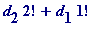
)
-
C
chooses 4 numbers from 0, 1, 2, ... , 26, say: (
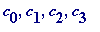
) = (3, 14, 22, 23).
-
A
calculates '
i
' from
i
= 3+14+22+23 = 3+2+2+3 = 2 (mod 4);
i
= 2, the hidden card is
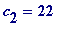
, and the cards to be passed will be 3, 14 and 23 (in the order determined below:)
-
A
calculates '
s
' from
s
= 3+14+23 = 3+2+3 = 0 (mod 4);
s
= 0.
-
After the imagined renumbering,
![c[2]](images/(n!+n-1)79.gif) 's new location will be 20 (=
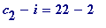
) = 4.
5
, and so
A
needs to signal that '
5
' to
P
(now, though, with representation
). Since 5 = 2.2! + 1.1! then the correct (agreed) order in which to pass them is 23, followed by 14, followed by 3.
's new location will be 20 (=
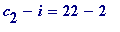
) = 4.
5
, and so
A
needs to signal that '
5
' to
P
(now, though, with representation
). Since 5 = 2.2! + 1.1! then the correct (agreed) order in which to pass them is 23, followed by 14, followed by 3.
-
P
, on receiving the ordered triple (23, 14, 3), sees that
s
is 0 (23+14+3 = 3+2+3 = 0 (mod 4)).
P
knows that
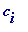
's renumbered value is one of 4.
0
, 4.
1
, 4.
2
, 4.
3
, 4.
4
or 4.
5
, and, on seeing the ordered triple (23, 14, 3), reads left to right and sees that:
the two numbers to the right of 23 are both smaller than it, and so
the number to the right of 14 is smaller than it, and so
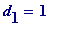
Thus
P
knows that
s
= 2.2!+1.1! =
5
, knows that
![c[i]](images/(n!+n-1)85.gif) 's renumbered value is 4.
5
= 20, and seeing the two smaller cards 3 and 14 (smaller than the shifted value of
's renumbered value is 4.
5
= 20, and seeing the two smaller cards 3 and 14 (smaller than the shifted value of
![c[i]](images/(n!+n-1)86.gif) ) knows that
) knows that
![c[i]](images/(n!+n-1)87.gif) is not
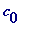
nor
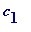
, and so is
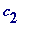
.
P
then adds 2 to 20 to obtain 22, the hidden card.
is not
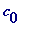
nor
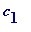
, and so is
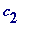
.
P
then adds 2 to 20 to obtain 22, the hidden card.